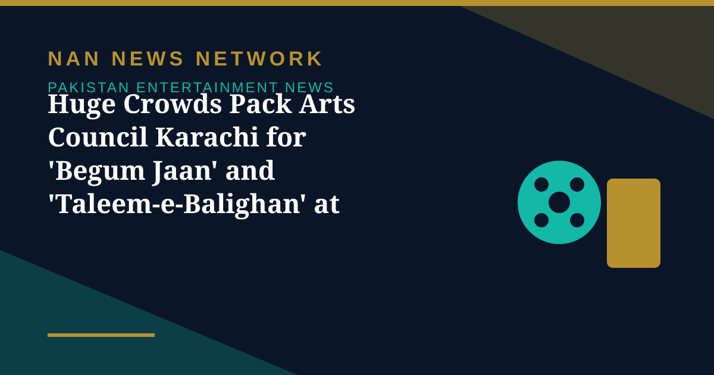

Huge Crowds Pack Arts Council Karachi for 'Begum Jaan' and 'Taleem-e-Balighan' at World Culture Festival

On the 12th and 13th days of the 25-day Third World Culture Festival Karachi 2026 at the Arts Council of Pakistan, Karachi, the plays \"Taleem-e-Balighan\" and \"Begum Jaan\" drew overwhelming crowds, forcing hall entrances to close, The News reported on November 11.
Two crowd-pullers
\"Taleem-e-Balighan\", written and directed by Farhan Alam Siddiqui, is a comedy set in an adult education centre, while \"Begum Jaan\" portrays a once-celebrated woman fading from public memory. Both productions packed the auditorium well beyond its seating.
A festival running to November 22
The festival features more than 1,000 international artists from over 150 countries alongside 500-plus Pakistani artists, and runs until November 22 with free registration. The same days also featured a visual-arts workshop by Swedish artist Domi Forest, a yoga session and a screening of the Punjabi film \"Mango Jatt\".
Sources: The News, November 11, 2026; Biz Today, November 11, 2026
More on Pakistan Entertainment News
- Two Pakistani Films Nominated for Diamond Butterfly Awards in Moscow on 12 November
- 'Mango Jutt' Screened at World Culture Festival in Karachi
- Ajoka Moves to Cinema With Biopic on Folk Theatre Legend Bali Jatti
- Tere Bin Becomes First Pakistani Drama to Hit 6 Billion Views on YouTube
- Sardaar Ji 3 Arrives on Chaupal OTT After Skipping Indian Theatres
- Durefishan Addresses Zaryab's Modesty Debate in Dar-e-Nijaat
- Saba Qamar Teases Shahzeb Khanzada's Case No. 10 With Tabish Hashmi
- Reema Khan to Return to the Big Screen After 16 Years in 'Panchi Pyare'
- Pakistan's Oscar Entry 'Hanging by a Wire' Tops Paramount+ Chart in North America
- Celebrities Shower Praise on Amar Khan's Zareena in 'Mitti De Baway'
- PlayFest 2026 Brings Bilal Saeed, Zoha Waseem and Afusic to PNCA Islamabad Today
- 'Constellations' Exhibition Opens as World Culture Festival Enters Its Eighth Day in Karachi
- Asim Azhar Gives Lahore's Surtaal Kids Band a Major Stage as His Pakistan Tour Opens in Faisalabad
- Global Artists Bring Theatre, Music and Magic to Karachi on Seventh Day of World Culture Festival
- Saba Qamar Teases Case No. 10 as Shooting Begins, With Tabish Hashmi Making His TV Acting Debut
- Children's Theatre Takes Centre Stage on Day Six of World Culture Festival Karachi
- Kinza Hashmi Reported for Shakib Khan's 'Mohabbat' — but the Casting Is Not Yet Confirmed
- Pakistan and Saudi Arabia Agree to Expand TV, Entertainment and Digital Media Ties
- World Culture Festival Karachi Screens 'Wakhri' on Its Fourth Day of Theatre, Film and Music
- PTV to Revive Drama and Film Academy With Pakistan's First Local Colour Grading Training
- Ali Zafar's Bostan Khan Look for 'Gangs of Khorasan' Leaves Fans Curious
- 'Hum Bhi Jee Lain' Takes On Parental Expectations Pushing Children Into Unwanted Careers
- Sheheryar Munawar Announces New 'Dar-e-Nijaat' OST After Fans Kept Asking for It
- 'Ghost School' Opens in Pakistani Cinemas After a Long Censor Battle in Sindh
- Faysal Quraishi and Hareem Farooq Decry Alleged 'Smear Campaign' Against 'Mango Jutt'
- World Culture Festival 2026 Opens in Karachi With 150 Countries Taking Part
- Punjab Plans Stricter Laws for Theatre and Stage Dramas, Replacing 1876 Act
- Faran Tahir Returns to Marvel as Raza in Vision Quest After 18 Years
- Ramayana Buzz Reaches Karachi as Fans Display Film Poster at Temple
- Humayun Saeed Calls for Pakistan's Own OTT Platform to Take Dramas Global
- Dananeer Mubeen Teases 'Bullet Speed' Twists Ahead in 'Hurmat'
- 'Ghost School' Opens in Pakistan Cinemas on October 30 After Censor Court Fight
- Pakistani Dramas to Watch in October 2026: 'Mitti De Baway' Leads the Month
- Pakistani Film 'Wakhri' Selected for UK's South Asian Film Season
- World Theatre Comes to Lahore as Punjab MAAS Festival Runs to October 28
- 'Mango Jutt' Punjabi Action-Comedy Hits Cinemas
- Dar-e-Nijaat Tops 2026 TV Ratings at 16.3 TRP
- Ali Zafar to Make His Pakistani TV Drama Debut in a New Crime Series